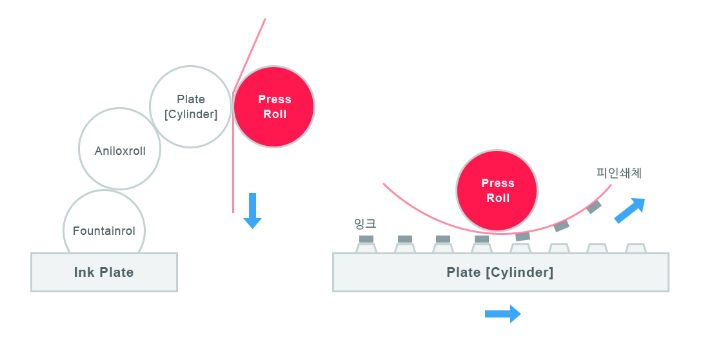

판지소재
Type
-
- A형 상자
- 상하가 개폐되며 길이면 및 나비면 상하에 날개를 가진 골판지 상자의 형식. 단면접착 골판지 상자로 식 품, 제과, 농수산물에 사용되어 튼튼합니다.
-
- Off-Set상자
- 상부만 개폐되며 고급 선물용 상자 에 사용됩니다. 삼면 접착이고, 음 료수, 주류, 식품 등에 많이 쓰이며 일반적인 상자보다 견고하며 튼튼합니다.
-
- 변형상자
- 상하가 개폐되는 단면으로 이루어 진 3접착 골판지 상자로써 식품, 제 과, 농수산물을 담는용도로 주로 사용되며 내수성이 강하여 수분을 잘 막습니다.
-
- Pre-Printing상자
- 기존의 가공 후 인쇄 (POST-PRINT)하는 방법이 아닌 선 인쇄 후 가 공 (PRE-PRINT)하여 만드는 상자로 후가공이 편리하여 고급상자에 속합니다.
Structure
각종 산업 자재용 포장재로써 내용물의 특성 및 고객 사용에 적합한 재질 구성한 제품입니다. 내충격성이 우수한 대용량 봉투로 내용물 충진 후에도 직립성이 우수한 제품과 표면에 대전 방지성을 부여한 전자제품 포장재 등이 있습니다. 골판지는 골심지로 골지를 형성한 후, 그 위아래에 표면지를 접착시킨 형태를 말합니다. 이 때의 골(Flute)을 처음 만든 미국 사람들은 골이 구겨진 상태를 보고 골게이티드보드(corrugated board)라 불렀습니다. 일본에서는 이를 단으로 보고 단보루라 부르며, 중국에서는 기왓장 모양과 비슷하다고 와릉지판이라 부릅니다.
- 표면(top)
- 골심지(middle)
- 이면지(bottom)
Process
HD Flexo 및 Full HD Flexo 플렉소 인쇄의 새로운 품질 표준입니다. HD Flexo 및 Full HD Flexo는 고해상도 이미징에 첨단 스크리닝을 결합한 제품입니다. 무엇보다도 HD Flexo 인쇄판을 사용하면 내쇄력이 늘어납니다. 세척주기를 줄여 인쇄기 사용을 최적화할 수 있습니다. 물론 친환경적인 이점도 얻을 수 있습니다. 그라비어 대신에 플렉소 인쇄기에서 유연포장을 인쇄할 경우 에너지 사용량과 CO2 배출량이 50%나 감소됩니다.
- 특징
- Anilox 선수(800Lpi) 정밀인쇄
- Post 인쇄 + 코팅방식(납기대용)
- 친환경 수성 잉크
- 친환경 수성 코팅
- 최대규격 : 2,450mm X 1,280mm
- Flexo Plate 와 인쇄 원리
- 돗판 방식으로 재질이 유연한판을 사용하는 것이 특징
- 